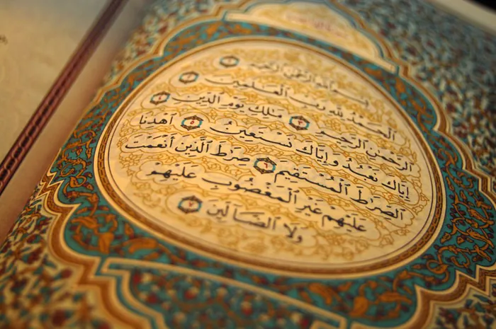
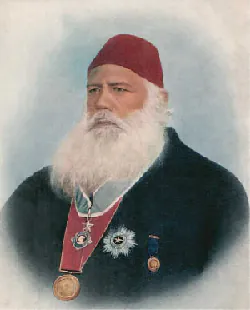
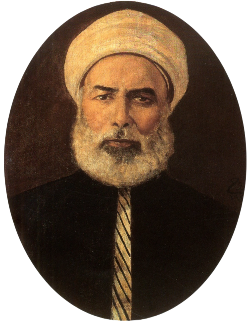
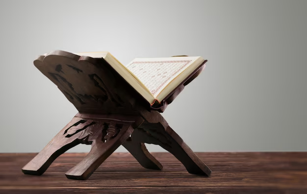
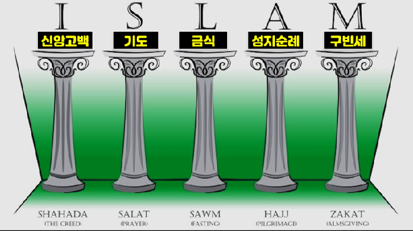

쿠란주의 (Quranism, لقآنة)
"오직 쿠란"만이 신앙의 중점이라는 종파로 언행록인 순나, 하디스를 불필요하다고 여김.
의외로 초기 이슬람부터 있었던 주장인데, 하디스는 대부분이 후세에 위조되었거나 어디까지나 참고사항으로만 봐야 한다는 것이 이들의 관점임.
하디스 없이는 쿠란이 불완전하다고 보는 수니파, 시아파 주류 이슬람에서는 당연히 이단 취급받음. 보수적인 나라에서는 가끔 처벌받기도.


하디스의 권위를 둘러싼 논쟁은 초기 시대부터 있었고, 일부 무타질라 계열 사상가들도 하디스에 비판적이었다는 평가가 있어왔는데 19세기에 여러 이슬람 개혁가들이 이슬람은 쿠란만으로도 충분하다는 주장을 내세웠고 인도에서 압둘라 차크랄라위가 세운 아흘-에 쿠르안이 조직적 운동의 시작으로 꼽힘.
20세기 초 이집트에서 무함마드 타우픽 시드키가 "이슬람은 쿠란뿐"이라는 글(1906)을 발표해 논쟁을 일으켰고 현대에는 튀르키예, 말레이시아, 미국등 서구권 등으로 퍼짐. 리비아 독재자 무아마르 카다피도 쿠란주의자였던걸로 알려져 있음

쿠란주의자들은 쿠란이 스스로를 "상세히 설명된" 완전한 책이라고 말한다는 점 (6:38, 6:114, 16:89 등), 하나님이 쿠란의 보존을 약속했다는 구절 (15:9)이 있는데 하디스에는 그런 보증이 없다고 주장하고 하디스는 무함마드 사후 200년 이상 지나 집대성되었고, 위작과 정치적 조작의 위험이 크다는 점을 지적함.
주류 이슬람에서는 쿠란이 "사도에게 복종하라"고 명령하며(4:59, 59:7 등) 하루 다섯 번 예배의 구체적 방식, 자카트 세부 규정 등은 쿠란만으로는 알 수 없고, 순나(전승된 관행)가 이를 보완한다는 입장이며 이슬람 학문은 전승 계보(이스나드)를 검증하는 정교한 하디스 비판학을 발전시켜 왔다고 봄.

왜 진보적이냐면, 실제로 현대사회에서 문제가 되는 구절들은 하디스나 그 해석에서 나온 것들이 더 많고(하디스도 신빙성이 나뉘기 때문에 취사선택함) 이 때문에 이슬람 진보파 쪽에서 현대기준에서 합리적으로 해석해야 된다면서 쿠란주의자들이 되는 사람들이 있음.
-쿠란에 학자들의 주석이 불필요하다고 봄.
-라마단을 지키지만 이드가 딱히 성스러운 날이라고 보지 않고 문화적인 축제라고 봄.
-기도는 꼭 다섯번이 아니라 아무때나 해도 됨.
-할례가 불필요한 전통이라고 봄.
-히잡이나 수염이 의무사항이 아니라고 봄.
-배교가 딱히 사형 등으로 처벌받을 사항이라고 보지 않음.
-음악과 예술이 금지사항이라고 보지 않음.
-개가 불경한 동물이라고 생각하지 않음.
-혼외성관계를 죄로 여기긴 하지만 간통, 동성애가 투석형에 해당될 만한 죄라고 보지 않음.
-성전은 방어전에만 해당된다고 봄.
-할랄고기가 아니어도 먹어도 됨.
-남녀 합동으로 기도해도 됨.
-마흐디와 닷잘(메시아와 적그리스도 같은 존재)을 믿지 않음
방어전이요?